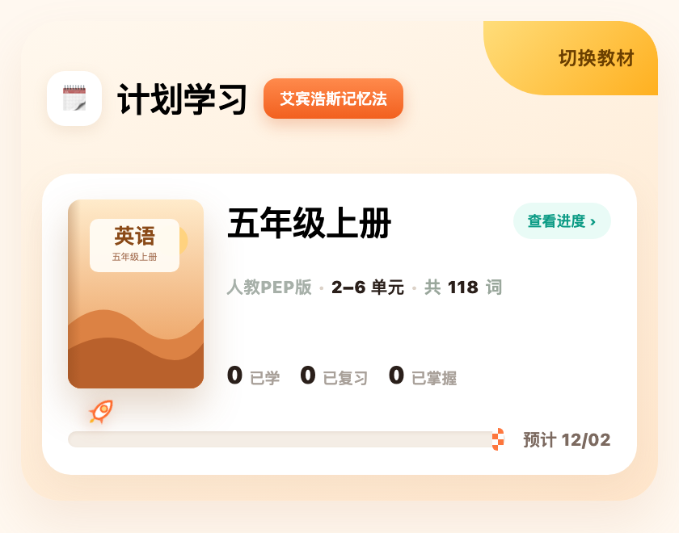
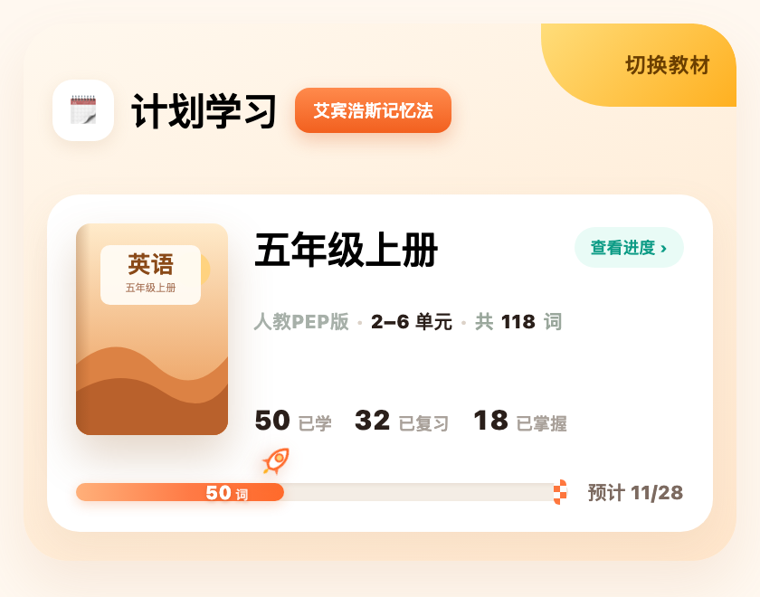
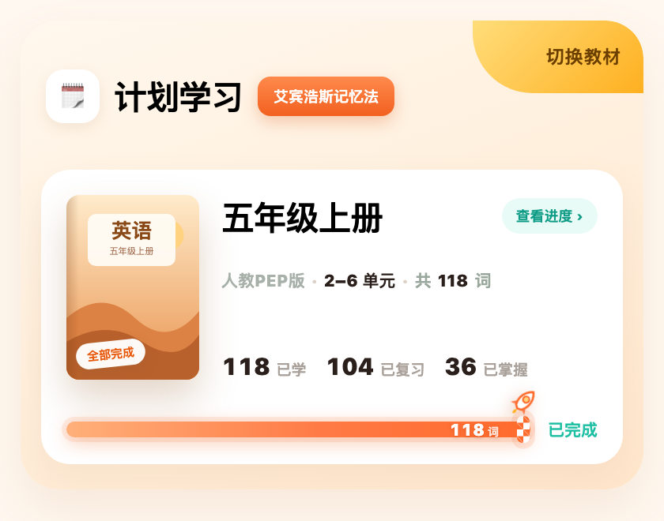
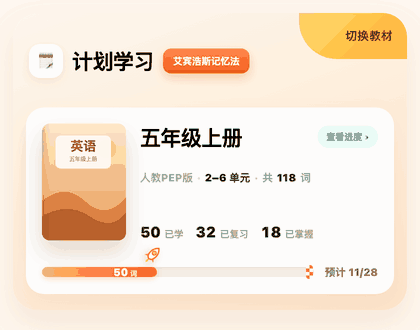
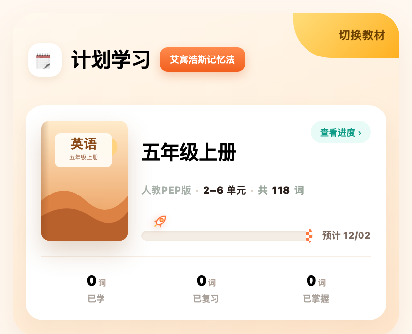
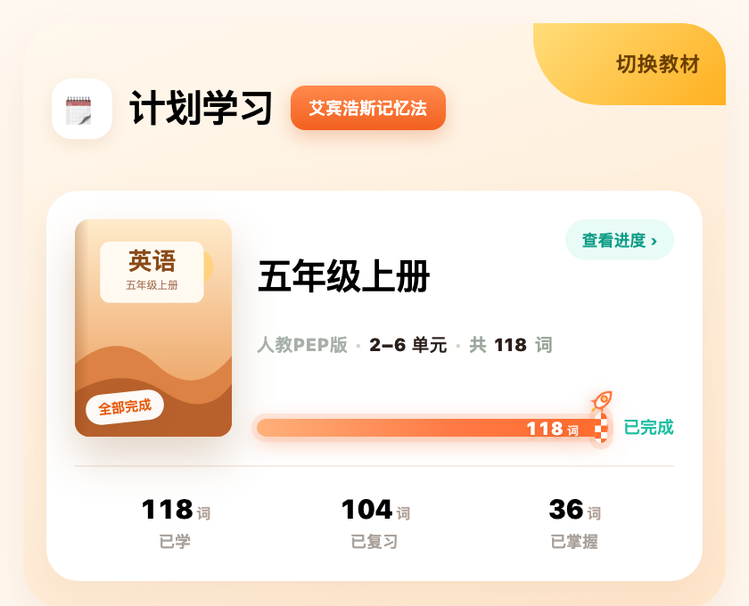
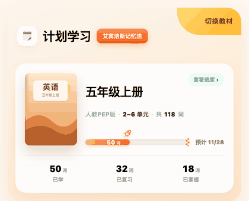

计划学习 · 头部进度条
冲刺进度条：4 个状态 + 可交互原型
两套卡片布局，各自 3 张静态图 + 1 条冲刺动图。条上的数字从 50 词 冲到 118 词，
用同一条速度曲线（起步 → 加速 → 全速 → 刹车 → 压线），压线才撒花、盖章、把日期换成「已完成」。
A · 条在书行下方、全宽
统计在书行底部 · 条横穿整张卡基础版

① 0 已学
空条，火箭停在起点，0 / 0 / 0，预计 12/02

② 部分已学
条头 50 词、42%，50 / 32 / 18，预计 11/28

③ 全部学完
满条、旗子发光、盖章，118 / 104 / 36，已完成

④ 冲刺动效
50 → 118 词，压线撒花 + 盖章 + 日期变已完成
B · 条缩进教材右栏
条与书名同左边界 · 统计下移全宽缩进版

① 0 已学
条在书名这一栏里，空条 + 火箭在起点
② 部分已学
条头 50 词、42%，三项统计在分隔线下方

③ 全部学完
满条、旗子发光、盖章，日期换「已完成」

④ 冲刺动效
同样的冲刺与庆祝，只是条更短更贴近书名
动效播放约定
按「日期 + 进度」指纹去重，避免每次都撒花
| 场景 | 播不播 | 说明 |
|---|
| 当天首次进入「今日」 | 播 1 次 | 从上次进度冲到当前进度，完整 2.4 秒 |
| 同一天再进，进度没变 | 不播 | 直接停在终态 |
| 当天又学了词再回来 | 补播 1 次 | 只冲新增那一段，≤0.8 秒，不撒花 |
| 从词库 / 检测 / 二级页返回 | 不播 | 页面切换不重播 |
| 首次达到 100% | 播 1 次 | 撒花 + 盖章，之后永远是完成静态态 |
| 次日进入 | 按进度判断 | 进度有涨才播，当天最多 1 次完整冲刺 |
| 系统开启「减少动态效果」 | 不播 | 直接终态，只留 300ms 淡入 |
词库 Tab
单元点读 / 学新词 / 复习 / 学习记录